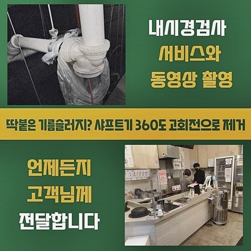
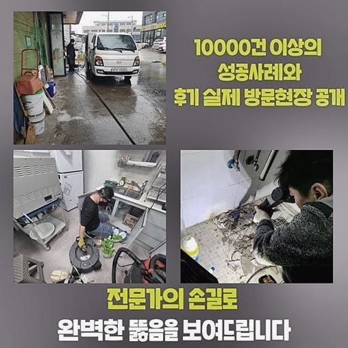
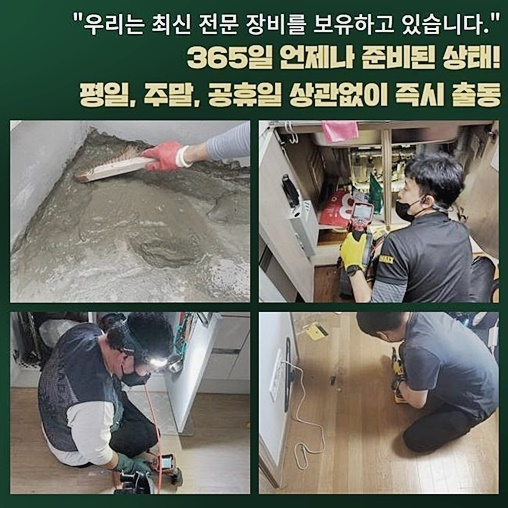
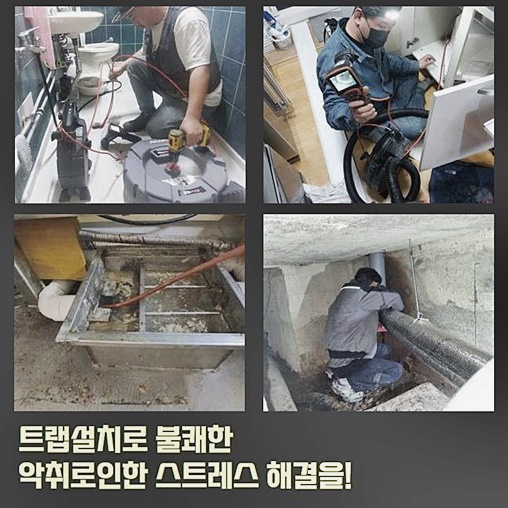
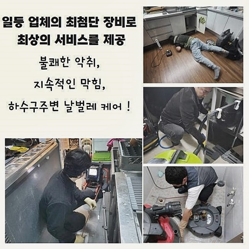
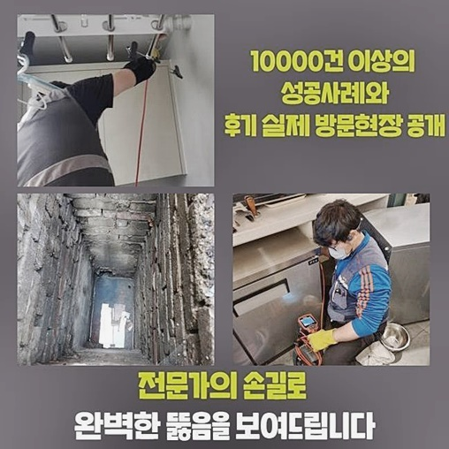
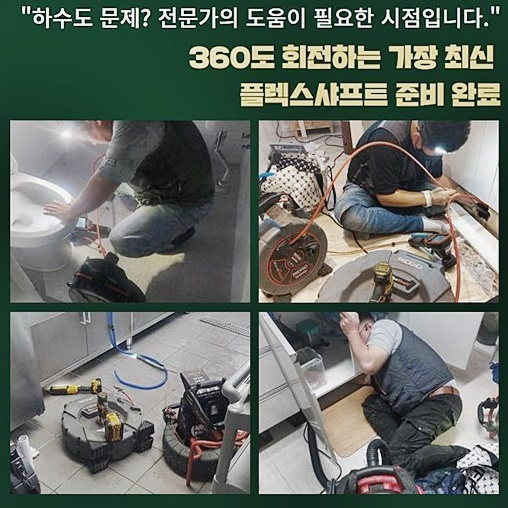

🏠 정왕2동대변기뚫음 포동 오수맨홀청소 설비공사
용인시 처인구 배관막힘 전문 시공 후기

📋 작업 개요
- 위치: 용인시 처인구, 수원시 영통구, 화성시 동탄
- 서비스 유형: 배관막힘, 누수수리
- 작업 일시:
- 업체명: 하수구수사대 (010-5615-2118)
🔍 문제 상황
정왕2동대변기뚫음 포동 오수맨홀청소 설비공사
우리팀은 의뢰자가 희망하는 때에 항시 출장해 드리고 있고 재빠르게 처치한답니다
저녁 10시 이후나 빨간날인 경우라 해도 즉각적으로 출발하여 시공에 착수합니다
의뢰인의 신청에 재빨리 대처하여 퀄리티있는 클리닝 활동을 이행하는 게 우리의 방향성입니다
정확하고 신뢰감있는 업무과정으로 속시원한 성과를 채울 수 있게 성의를 쏟고 있습니다
점검단계에선 근본적 동기를 판단하는데 업무량이 상당부분 소비되었으나 방문지의 벽면에 매립된 배수관이 근원점이었다는 걸 확정하고 대책을 구축하였어요
결과적으로 건물 사용자들의 불편리를 억제하고 내방인들이 편의성 있게 사용하시게끔 역할을 다하였답니다
해당되는 사안은 여러가지 까닭으로 강화되므로 조속한 처치가 요망됩니다
저희들은 언제라도 의뢰자의 고민에 즉각 대처하여 퀄리티있는 수선을 이행하겠습니다
빌딩 안에서 나타난 물막힘 양상은 1년 전부터 진행됐단 사실을 알게 되었답니다
이것은 인근 상인들에게 불편을 초래하게 만들었는데 유독 물을 쓰는 과정이 어려웠답니다
이런 부분은 영업에 엄청난 해를 일으켰기에 발빠른 해소가 요망되었답니다
물이 막히는 상황은 영조물의 연식과 세부 구조 거기다 부분적인 고장을 포함하여 수많은 연유로 인해 발발하게 되는데요

🔎 원인 분석
💡 전문가 진단: 정밀 진단 장비를 사용하여 슬러지의 고착 여부를 판명하고 타격/세척 작업을 실시했습니다.
그렇기 때문에 근원점을 간파하기 위해선 다채로운 가망성을 계산해 보아야 합니다
보편적인 아파트 건물에서 여러 정황을 처리한 것을 포함해 진중한 마음가짐으로 언제나 전문적 내용을 숙지하는 태도를 견지하여 최고의 자리를 유지하고 있어요
저흰 최고급 배관카메라와 석션기계를 초함 누수와 관련된 다양한 기기들을 소지중이기에 주변의 전문인들에 비해서 상위 수준이라 평가받게 된 것이죠
이러한 도구들을 기초로 차단을 만든 찌꺼기들을 없애나가는 업무를 속행하고 있답니다
우리들은 날쌔게 트러블의 연유를 건조물 하단에 설치된 배수파이프에서 발굴하였어요
해당되는 지점은 깊게 매립된 관계로 손쉬이 볼 수 있는 위치가 아니었으나 메인 이슈가 되었던 위치였답니다
저희는 알맞은 도구를 이용하여 고장을 막힘없이 해결하게 되었는데요
일반적인 거주지에서부터 공용 시설까지 여러 곳에서 예상치못하게 발생되는 사태이기에 전문인의 방문이 불가결합니다
만일에 파이프정체가 난해한 상태로 진행되었을 때에 테크니션의 손길이 요구되며 자체적으로 해결하려고 든다면 외려 고장만 심해지게 되겠죠
그러므로 다양한 고충을 증험하지 마시고 기술자에게 의뢰하는 게 낫습니다
기기들이 배수관에 끼일 가능성이 있었기에 노즐형태의 장비를 사용해서 고속으로 돌아가게 하여 고형물을 소거시켰고 반복적으로 작업해 깔끔한 배관면으로 만들어낼 수 있었답니다
화장실 내부와 주방과 관련된 배관 안에 누적된 슬러지를 없애고 물청소를 통하여 마무리지을 수 있었답니다
이것으로 물막힘없는 편안한 생활을 확보할 수가 있었어요
빌라나 아파트를 막론하고 배관정체를 처치하기 위해선 우선 주된 이유를 확인하셔야 합니다

🔧 작업 과정
잔재들을 소거한 다음에 배관카메라를 사용해서 하수관 내측을 관측한 뒤 어떤 종류의 막힘이 벌어진 것인지 검열해 보았어요
보이는 부분만 소멸하는 것에만 주안점을 두지 않고 근원적인 포인트를 그냥 놔두게 된다면 일시적으로 해결될 수는 있겠지만 재차 막힘이 발발할 수 있어요
그러므로 저희들은 근본적인 처소를 간파하지 못하게 된다면 비용발생이 되지 않는다는 규율을 유지 중에 있습니다
고객님을 향한 우리의 이런 태도로 항상 좋은 결과물을 선물한답니다
저희팀은 선제적으로 상부의 노폐물을 쇄소 진행하기로 합의합니다
이 상황과 관련지어 손님께 설명하였고 관로 장애가 급작스레 발생되었다고 푸념하셨답니다
왜 이렇게 된 것인지 단편적인 시각으로는 파악해내기 난해하지만 저희들은 여러 고초 속에서도 능숙함을 갖춘 기술자들로 짜여 있어서 아무 고장이라 하여도 대응할 수 있어요
우리들은 다양한 경험으로 무장한 기술인으로 이루어져 있고 이번에 처치했던 담당자도 장기간 수련한 베테랑이셨어요
보시는 바대로 철두철미한 준비로 수리하므로 힘겨운 고장도 타개할 수 있답니다
배관카메라를 넣어서 관로의 모양새를 관측했더니 꽤 많은 노폐물이 누적되어 있는 것을 파악할 수 있었어요
이것이 타 관로와 통하는 것은 아닐지에 관해 알아봐야 하겠단 계획을 세우고 싱크대까지 펼쳐진 관을 살피기로 정했답니다
그 공간으로 이동하여 안쪽의 모습을 검열했더니 주방공간과 통하고 있다는 사실을 알게 되었어요
이를 통해 주된 이유를 파악하고 조치를 세울 수가 있었어요
이에 정밀한 조사와 발빠른 대응이 관로 개문작업의 과정에서 중대한 몫을 담당한다는 걸 알았죠
같은 시간 다른 지점에선 빠르게 해결이 필요하다며 즉각 방문을 요구하셨는데요
전문가는 조속하게 그곳에 도달하여 빠르게 작업을 끝맺으려 체계적으로 작업도구를 예비하였습니다
현재의 문제점을 간파하려 액체성분을 쏟았더니 느릿느릿 없어지는 것을 관찰하였답니다
이 상황은 배수관에 차단이 발생하였음을 뜻했습니다
다수가 사용하면 더 느려지는 모양새를 맞닥뜨릴 수 있죠
이것에 대처하여 우리팀은 올바른 제반설비를 써서 차단된 관로를 효율적으로 처치하였습니다
배수관과 연계된 트러블은 기술자의 진단과 제때 해소가 요구됩니다


✅ 작업 완료
시공 과정에서는 굴곡진 파이프 내부를 들여다 봐야 하므로 요망되는 공구들을 전부 활용하여 능률적으로 시공을 이행하고 있죠
바깥쪽으로 이어지는 지점까지 편안하게 물이 흘러갈 수 있게 신중하게 수선하고 있죠
주변 환경의 차이로 인해 나타날 수 있는 변수들에도 빠르게 대처하여 퀄리티있는 결과를 제공해 드리려 고군분투합니다
사소한 변화라고 하찮게 여기고 내팽개치는 고객분들이 존재하는데요
이것은 더 난처한 경우를 유발시키는 단초가 될 수 있으므로 장애가 발현되었다면 얼른 의뢰를 이행하시는 것이 마땅합니다
고객분들이 믿을 수 있는 성과를 만나시게끔 진중하게 노력하겠습니다




⚠️ 하수구 배관 막힘 예방 및 관리 가이드
- ✅ 머리카락, 비닐, 물티슈 등 물에 분해되지 않는 이물질은 절대 흘려보내지 마세요.
- ✅ 기름기 많은 식기는 설거지 전 키친타올로 먼저 기름때를 닦아내세요.
- ✅ 주기적으로 배수구에 뜨거운 물을 가득 부어주어 유지방 고착을 방지하세요.
- ✅ 작업 후 1년 이내 재발 시 무상 A/S 보증 서비스를 제공합니다.
💡 핵심 정리
- 확실한 장비 작업(내시경 점검 및 샤프트 스케일링)으로 원인을 뿌리 뽑습니다.
- 작업 후 1년 이내에 동일한 부위 재발 시 100% 무상 A/S 서비스를 보장합니다.
- 서울 · 경기 · 인천 전 지역에 24시간 언제든 긴급 출동할 수 있도록 항시 대기 중입니다.
❓ 자주 묻는 질문 (FAQ)
🚨 용인시 처인구 배관막힘 문제로 고민이신가요?
정확한 원인 진단과 확실한 시공으로 재발 없는 해결을 약속드립니다.
24시간 긴급 출동 | 서울 · 경기 · 인천 전지역 | 1년 내 재발 시 무상 A/S